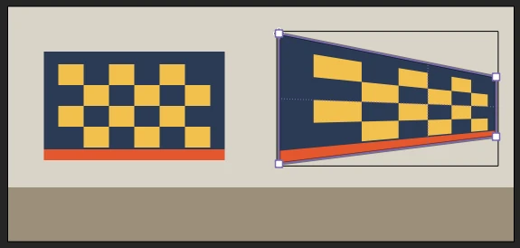
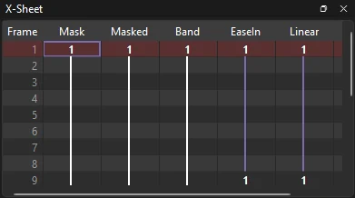

Animation
Rigs and motion
Build a character out of parts that move together, pose it with sliders and handles, and shape its motion as curves. Everything here saves in ordinary FLA files: other apps that open them play the keyframes and simply leave out what only Phoenix draws.
Pegs
A peg is a layer that holds only a transform. Pick a layer and choose : a peg layer (Peg 1) appears above it and the layer is parented to it. Move, turn or scale the peg (with the Free Transform tool, or tween it) and everything parented to it follows, about the peg's pivot. Parent more layers to the same peg by right-clicking them and choosing it from Parent Layer, or parent pegs to pegs to build a hierarchy. See Layer parenting.
On the stage a peg shows as a crosshair in a circle, in its layer's color, with a tick for the way it faces. It never draws in exports. In the file a peg is an instance of an empty graphic symbol on a parent layer, so the animation plays the same anywhere the FLA opens.
Master controllers
A controller is one slider that drives several properties at once: a head turn that moves the head, swaps the eyes' drawing and turns the nose. Open and choose New.... Then, for each thing it should drive, pick the layer in the timeline, select the controller and choose Bind...: choose the property (X, Y, rotation, scale, scale X, scale Y, alpha, or a graphic's frame) and the values it should have with the slider at 0 and at 1. Both start at the value the layer has now. Remove takes out the selected binding or controller.
Dragging the slider sets every property it drives on the frame shown, as one undo step. A layer with no keyframe there gets one; cut into a tween, the new keyframe takes the in-between and both halves keep tweening. What is saved is ordinary keyframes; the controllers themselves are kept with the document for the next time you open it in Phoenix. To rig a cat's head turn on one, step by step, follow the A head turn on a controller tutorial.
Joysticks
A joystick is a controller you move in two directions at once: a handle in a square, its across driving some properties and its down others, such as a head that turns left and right and nods up and down. Choose New › Joystick... in the Controllers panel. When you bind a property to it, also choose its Axis: Across sets the value at the left and at the right, Down the value at the top and at the bottom.
A joystick can also pick drawings from a grid. Draw the head turned every way in one graphic, a row at a time: frames 1 to 3 looking up (left, center, right), 4 to 6 straight ahead, 7 to 9 looking down. Bind the graphic's layer with Frame grid (graphic), a first frame of 1, a last frame of 9 and 3 drawings a row. The handle then shows the drawing under it: top left is frame 1, the middle frame 5.
Drag the handle to set everything it drives on the frame shown, as one undo step; hold Shift to keep to the quarters, and double-click to center it.
To have a bone drive drawings, fades or a shape's corrections as it turns, rather than a slider, see Bone corrections.
Deformers
A deformer bends a symbol's art by handles instead of redrawing it. Select one or more instances and choose :
- Curve Deformer lays a spine along the art. Drag its square anchors and round handles with the Selection tool and the art bends along it, keeping its thickness: an arm at the elbow, a tail, a sway.
- Envelope Deformer puts a four by four grid of handles around the art. Drag any of them and the art is pulled with it, smoothly, most near the handle: a squash, a stretch, a lean.
- Corner Pin puts a square handle on each corner of the art. Drag a corner anywhere and the art follows in true perspective, so it looks like it lies on a surface turned away from you: a poster on a wall, a picture on a TV screen, a road going back into the distance. Straight lines stay straight, and the far side gets smaller, as it would on a real wall.

The handles show on a selected instance's keyframe. Each keyframe keeps its own pose, and a classic tween goes from one pose to the next, so a sign can swing open or a screen can slide into place. Reset Pose puts the handles back where they started; Remove Deformer takes the deformer off. Curve and envelope deformers bend shapes; bitmaps and text inside the symbol are not bent. A corner pin takes everything in the symbol with it: shapes, text, bitmaps and other symbols. To try the Curve Deformer step by step, follow the tutorial A tentacle with the Curve Deformer.
A corner pin works on anything you select. Select loose shapes, a bitmap or text and choose Corner Pin, and Phoenix first puts them in a new graphic symbol (named Corner Pin 1, 2 and so on) and pins that. Undo takes both steps back at once.
Deformed art shows bent on the stage and in everything Phoenix exports: movies, image sequences, passes, SWF movies and HTML5 pages. draws each bent instance into a bitmap, a new one only on the frames where it changes. Other apps that open the FLA as Phoenix saved it show the art as drawn.
Function curves
shows one property of the layer picked in the timeline as a curve over its frames: X, Y, rotation, scale X and Y, skew, alpha, brightness, tint or a graphic's frame, or the camera's pan, zoom and turn on a camera layer. The curve runs through the tweens between keyframes, as they play, and each keyframe is a dot.
Drag a dot up or down to change that keyframe's value, or double-click it to type one; both are one undo step. Click anywhere else in the graph to go to that frame. To try it, follow the A cycle with Loop tutorial.
X-sheet
shows the timeline as an exposure sheet: a column per layer, a row per frame, each drawing numbered by its content. Type a drawing number into a cell and press Enter to expose that drawing there, press X for a blank, or Delete to clear the keyframe there so the drawing before it holds on. Enter with nothing typed moves down a row, and the arrow keys move between cells. To time a hop this way, follow the Timing with the X-sheet tutorial.

Light table
(Shift+L) fades every layer except the ones selected in the timeline, where you are drawing, so you can trace over the other layers without mistaking them for your own.
Multiplane camera
adds a camera layer at the top of the scene, running its full length; a scene has one camera. In , drag each layer nearer to or farther from the camera, so a pan moves near layers faster than far ones. To try it on a landscape, follow the Multiplane camera tutorial.
The Camera tool (C) moves the camera: drag to pan, Shift-drag to zoom and Alt-drag to turn. Each drag keys the camera on the frame shown, and the camera tweens into that keyframe from the one before. Function Curves shows the camera's pan, zoom and turn on the camera layer. Turn off to see the scene without the camera's moves.
The camera can also color the whole picture it sees, to fade a shot to black or white, wash it with a tint or make it see-through. Select the camera layer's keyframe (or use the Camera tool) and choose a Style under Camera Color Effect in the Properties panel: Brightness, Tint, Alpha or Advanced, as for an instance's color effect. The effect is keyed with the camera, tweens from one camera keyframe to the next, and shows on the stage with Camera View on and in movies exported through the camera. It colors the scene's layers; the stage color stays as it is, so for a fade to black over the whole frame, give the scene a background layer.